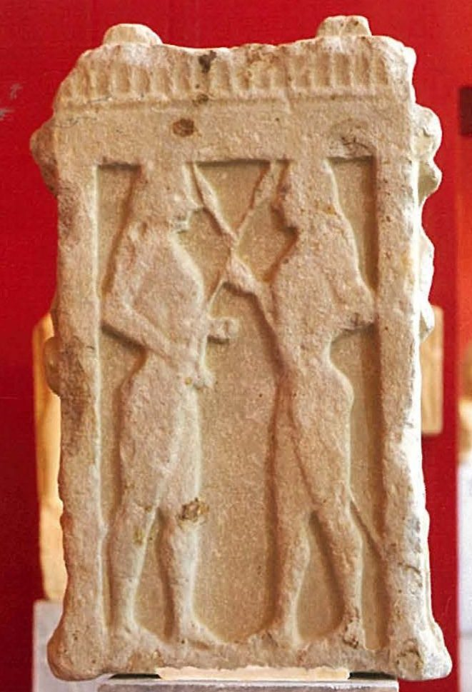
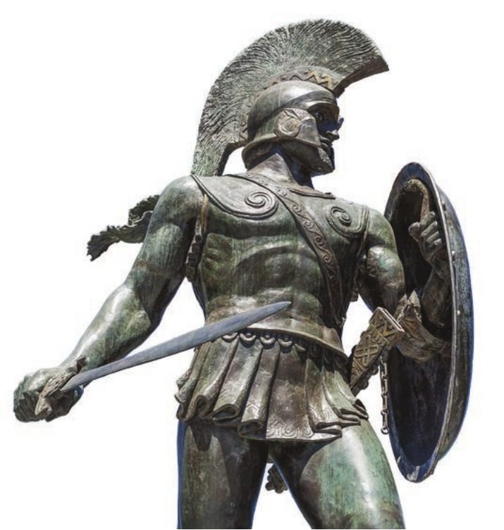
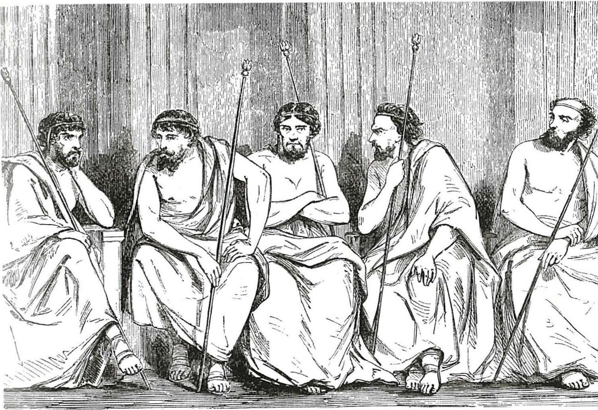

Spartan society to the Battle of Leuctra 371 BC · Lesson 4
The two kings
What did Sparta’s two kings do, what were they given — and what stopped them becoming tyrants?
Year 12 Ancient History · Section II, Option G · Present with → or space · Read on a phone with R

Connect · 3 minutes · cold call
From the Rhetra to the kings
The Great Rhetra set up a gerousia of thirty — 28 elders with the two kings, its “founder-leaders” — and a citizen assembly. The rider, which Plutarch credits to two kings, Polydorus and Theopompus, one from each royal house, let the elders and kings dissolve an assembly that adopted a ‘crooked’ proposal.
The founder-leaders themselves. Tyrtaeus called them “the kings, honoured of the gods”. What did Sparta’s two kings actually do, what were they given — and what limited them?
One key idea from Lesson 3, in one sentence.
Learning intentions and success criteria · 2 minutes
Today’s goals
- analyse the powers and privileges of the Spartan kings and the limits on them
- explain how religion supported the dual kingship
- write an 8-mark explanation under time
- sort the kings’ privileges into military, religious, judicial, political, honorific and economic
- explain how the Dioscuri and royal funerals connect religion and kingship
- explain at least three limits on the kings’ power, naming a source for each
- write an 8-mark explanation in 14 minutes that names its sources
A dyarchy is rule by two at once — two kings from two royal houses, not a king and a deputy (NESA spells it diarchy; both are correct). A prerogative is a special right that comes with an office — here, the kingship.
Note-making · today’s routine
How to structure your notes
questions and key terms
short phrases, arrows (→ led to), abbreviations (Hdt = Herodotus, K. = king)
- 1Listen and look firstDon’t copy while the slide is being explained.
- 2Write your own notes at each ✎ checkpointPhrases, not sentences. Arrows for cause and effect.
- 3Compare with the model notesThey appear one row at a time. Add what you missed in a second colour.
- 4Copy each cue question into the left columnLater, cover your notes and answer the cue questions from memory.
- 5Finish with a three-sentence summaryFive checkpoints: two royal houses · the king at war · priest, judge and councillor · twin gods and royal funerals · limits on royal power.
Key vocabulary
Words you will use today
| The kingship | Meaning |
|---|---|
| dyarchy | rule by two people at once: Sparta’s dual kingship (NESA spells it diarchy) |
| Agiads | one royal house, named after an early king, Agis |
| Eurypontids | the other royal house, named after an early king, Eurypon |
| Heraclids | descendants of the hero Heracles; both royal houses claimed this ancestry |
| prerogative | a special right that belongs to an office, here the kingship |
| ephors | five officials elected each year, with strong powers over the kings (Lesson 6) |
| Religion and law | Meaning |
|---|---|
| libation | an offering of liquid, usually wine, poured out for the gods |
| Pythians (Pythioi) | envoys chosen by the kings to consult Apollo’s oracle at Delphi |
| proxenos | a citizen who represented another Greek state’s interests in his own city |
| heiress | a daughter who inherits her father’s property because he has no sons |
| Dioscuri | Castor and Polydeuces (Pollux), twin sons of Leda — Polydeuces fathered by Zeus, Castor by Tyndareus; also called the Tyndaridae |
| demigod | a being between human and god; Xenophon says dead kings were honoured as demigods |
Spelling: Cooley’s translations use Greek forms (Lakonia, Herakles, Dioskouroi, Kastor, Polydeukes, Kleomenes, Demaratos). In your own writing use Laconia, Heracles, Dioscuri, Castor, Polydeuces, Cleomenes, Demaratus.
1 · Two royal houses · I do — the big picture
Two kings at once
Most Greek cities had given up kings long before the classical period. Sparta kept two at once: one from the Agiad house and one from the Eurypontid house.
Cooley calls the dual kingship “an unparalleled institution which we cannot definitely explain”.
Both houses traced their line back to the hero Heracles. Tyrtaeus sang that Zeus “Has given this city to the sons of Herakles” (fr. 2, trans. K. Hughes, Cooley A3).
Kings ruled for life and inherited the throne; succession disputes were common. Heirs skipped the agoge: “The law exempts boys being raised as future kings from this compulsory practice” (Plutarch, Agesilaos 1, trans. in Cooley D75).

1 · Two royal houses · We do — the Spartans’ explanation
A twin myth — and why Cooley doubts it
[2] Shortly afterwards, Aristodamos’ wife, Argeia, gave birth to twins. … [5] The Pythia told them to treat both boys as kings, but to give greater preference to the older one. … [7] … Taking the baby which was always given preferential treatment by his mother as the older one, they brought him up at public expense. They named him Eurysthenes and the other one Prokles. [8] When they grew up, they say that, though brothers, they were always at loggerheads with each other their whole lives, and this was the case with their descendants.
Herodotus, Histories 6.52 (part) · written c. 450s–420s BC · from Halicarnassus, not a Spartan · trans. B. Wilson · Cooley D2
What does the myth explain?
Why Sparta had two kings, both approved by Delphi — and why the two houses so often quarrelled.
Why does Cooley doubt it?
“the separate lines of kings had separate burial places, suggesting they were different families” — and some early Eurypontid names look invented, to give that house as long a line as the Agiads.
“perhaps the best guess is that it reflects an early amalgamation of two communities” — perhaps two of Sparta’s original villages (Lesson 2).
Notes checkpoint 1 of 5
Two kings, two royal houses
Write your own notes first. Then compare, row by row, and add what you missed in a second colour.
2 · The king at war · I do — the key source
Herodotus: the kings’ religious and military privileges
The Spartiates have granted their kings certain special prerogatives. First of all they hold two priesthoods, those of Zeus of Lakedaimon and Zeus, Lord of Heaven. Then, they have the right to declare war on any country they please; in this, no Spartiate can oppose them without incurring the penalty of religious pollution (and consequent exile). On active service, the kings lead the advance and are the last to retreat and are allocated a personal bodyguard of a hundred picked soldiers. On their expeditions they are entitled to the use of as many cattle as they please, and the skins and backs of all sacrificed animals are apportioned to them.
Herodotus, Histories 6.56 · written c. 450s–420s BC, within living memory of kings such as Leonidas · trans. B. Wilson · Cooley D5
Cooley: “The most conspicuous function of the Spartan kings was their role as military commanders, with almost unlimited power in the field”.
List every military privilege.
Lead the advance and last to retreat · a bodyguard of a hundred · as many cattle as they please on campaign.
Which privilege is religious, not military?
The two priesthoods of Zeus — listed first.
What did the skins and backs give them?
Meat and hides: Cooley calls hides “also a form of material income”.
Which claim needs testing?
The right to declare war — next slide.
2 · The king at war · I do — two warnings
Two claims to handle with care
Herodotus gives the kings “a personal bodyguard of a hundred picked soldiers”. Don’t confuse them with the 300 hippeis, whom other sources call the king’s guard: Leonidas marched with his “bodyguard of three hundred men which the law assigned to him” (Herodotus 7.205, Cooley F11), and Thucydides puts King Agis “with his bodyguard of 300 so-called knights” (Cooley E103).
How the hundred and the three hundred were related is unclear.
Cooley: “There is no evidence from the historical period to support Herodotus’ assertion that the kings on their own could declare war.”
- 1432 BC: a king argues against warKing Archidamus urges caution about war with Athens (Thucydides 1.79–85, Cooley E29).
- 2An ephor answers himSthenelaidas: “So now, cast your votes for war, fellow Lakedaimonians, and be worthy of Sparta.” (E30)
- 3The assembly decidesIt votes that the Athenians had broken the treaty — in effect a vote for war; Sparta then puts “the decision for war” to its whole alliance (Thucydides 1.87, E31).
Cooley on the king’s speech: “it is a view, not a command nor state policy – and, of course, it is rejected by popular vote.”
2 · The king at war · I do — once the army marched, the king was in charge
How a king began a campaign
“Two ephors also attend, but they take no part in the proceedings unless requested to do so by the king.” (13.5)
Xenophon: “the king has no other commitments left to him on active service beyond his priestly obligations to the gods and as general of his army.” (13.11)
Notes checkpoint 2 of 5
The king at war
3 · Priest, judge and councillor · I do — Herodotus continues
Priest of the city: the peacetime privileges
[57.1] So much for their military prerogatives. Their peacetime privileges are as follows. At all public sacrifices, the kings are the first to take their seat at the subsequent feast; they are the first to be served and they are each given portions of every dish double the size of those served to other guests. Theirs is the right to pour the first libations, and the skins of all sacrificed animals belong to them. [2] On the first and the seventh day of every month the public purse supplies to each of them an unblemished animal to sacrifice at Apollo’s temple, plus twelve gallons of barley meal and a Lakonian quart of wine. They preside at all athletic competitions in special seats of honour. They have the right to nominate any citizens they wish as proxenoi, including two ‘Pythians’ each, ambassadors whose duty it is to go on embassies to Delphi and to dine with the kings at public expense.
Herodotus, Histories 6.57.1–2 · written c. 450s–420s BC · trans. B. Wilson · Cooley D8
Which privileges are religious?
The first libations · an animal to sacrifice at Apollo’s temple on the 1st and 7th of every month · two Pythians each, sent to Delphi.
The Pythians (Pythioi) were envoys to Delphi. One textbook prints pithoi — storage jars.
With their Pythians, the kings were “the official guardians of all oracles” (6.57.4). Cooley suggests that “such omens were probably likely to support the king’s intentions”: a king could shape decisions in the gods’ name.
3 · Priest, judge and councillor · We do — law and the gerousia
Judge and councillor
[4] They are the official guardians of all oracles, though the ‘Pythians’ also share the knowledge of their contents. There are also some legal matters over which the kings exercise sole jurisdiction. In the case of a girl inheriting her father’s property, if her father has not betrothed her to anyone, then the kings decide who is entitled to marry her. They also control the management of the public roads. [5] If anyone wishes to adopt a child, he must do it in front of the kings. They are entitled to sit in council with the twenty-eight members of the gerousia; in their absence their closest relatives among the members exercise the kings’ prerogatives, and cast two votes for the kings and a third for themselves.
Herodotus, Histories 6.57.4–5 · trans. B. Wilson · Cooley D8
Name the three legal matters.
Unbetrothed heiresses · the public roads · adoptions — family and property matters in a citizen body based on inherited land.
What was their political role?
Seats in the gerousia: two voices in a council of thirty.
Two votes each?
Thucydides says people wrongly think “the kings of the Lakedaimonians have not one vote each but two” (1.20.3, trans. B. Wilson, Cooley H1). Cooley: “it is not actually clear who is right”.
3 · Priest, judge and councillor · I do, then We do — sort first
Sort the kings’ privileges
Rule six headings in your notes — military · religious · judicial · political · honorific · economic — and write each letter under one. Some fit two places: choose the best and be ready to justify it.
- Atwo priesthoods of Zeus
- Bdecide whom an unbetrothed heiress marries
- Clead the army: first in the advance, last to retreat
- Dfirst seat and double portions at feasts after public sacrifices
- Ehigh-quality land in many perioikic territories
- Fan animal to sacrifice at Apollo’s temple on the 1st and 7th of every month
- Gsit in council with the 28 members of the gerousia
- Ha personal bodyguard of a hundred picked soldiers
- Icontrol the management of the public roads
- Jeveryone stands when the king appears — except the ephors
- Kpour the first libations
- Lthe skins of all sacrificed animals
- Mnominate proxenoi, who looked after other states’ interests
- Nchoose two Pythians each, envoys to Delphi
- Oas many cattle as they please on campaign
- Ppreside at athletic competitions in seats of honour
- Qadoptions must take place in front of the kings
- Rofficial guardians of all oracles
- Soffer all public sacrifice on behalf of the state
- Thonoured at death as demigods
From Herodotus 6.56–57 and Xenophon, Constitution of the Lakedaimonians 15. The next slide checks the sort, with the source for each card.
3 · Priest, judge and councillor · check the sort — one category per keypress
The privileges, sorted — with the source for each
| Category | Privileges · source |
|---|---|
| Military | Clead the army: first in the advance, last to retreat D5 · D9 Ha bodyguard of a hundred picked soldiers D5 Oas many cattle as they please on campaign D5 |
| Religious | Atwo priesthoods of Zeus D5 Sall public sacrifice for the state D9 FApollo’s temple, 1st and 7th of every month D8 Kthe first libations D8 Ntwo Pythians each D8 Rguardians of all oracles D8 |
| Judicial | Bunbetrothed heiresses D8 Ithe public roads D8 Qadoptions D8 |
| Political | Gseats in the gerousia with the 28 elders D8 Mnominate proxenoi D8 |
| Honorific | Dfirst seat, double portions D8 Pseats of honour at the games D8 Jall rise — except the ephors D9 Tfunerals as demigods D9 |
| Economic | Eland in perioikic territory D9 Lskins of sacrificed animals D5 · D8 |
Cooley: the kings “enjoyed the revenue of extensive estates”, and hides were “also a form of material income”.
D5 = Herodotus 6.56 · D8 = Herodotus 6.57 · D9 = Xenophon, Constitution of the Lakedaimonians 15 (trans. B. Wilson, in Cooley). Xenophon’s chapter also describes a monthly oath between kings and ephors: Lesson 6.
Notes checkpoint 3 of 5
Priest, judge and councillor
4 · Twin gods and royal funerals · I do — the Dioscuri
Twin kings, twin gods
[2] As a result of this disagreement [sc. between Demaratos and Kleomenes I], a law was made at Sparta that both kings were not allowed to follow an army when it went abroad: previously they had both done so. One of them would be released from the army, and one of the Tyndaridai would also be left behind: previously (images of) both of these special helpers would follow the army.
Herodotus, Histories 5.75.2 · written c. 450s–420s BC, about 75 years after the law · trans. B. Wilson · Cooley D6
Twin sons of Leda, also called the Tyndaridae. Cooley: “Kastor’s mortal father was Tyndareos, King of Sparta (with Pollux or Polydeukes being the son of Zeus)”; Castor’s tomb was shown at Sparta. Alcman’s choral song praised “Kastor – skilled horsemen, tamers of / Swift horses – and glorious Polydeukes” (fr. 2, late 7th century BC, trans. K. Hughes, Cooley A15).
Why the law?
At Eleusis in 506 BC Demaratus pulled out of Cleomenes’ invasion of Attica, and the allies went home, “seeing the kings of the Lakedaimonians at loggerheads” (5.75.3, Cooley E14).
What does it link?
One king and one twin stayed home; one king and one twin went to war.
“(images of)” is the translator’s addition, and Herodotus never says the dual kingship was modelled on the twins. Argue that the evidence suggests religion reinforced it.
4 · Twin gods and royal funerals · We do · 9 minutes · pairs
A worshipper’s own words: the Plestiadas relief
Plestiadas d[edicated] me to the Dioskouroi, a statue of the twin sons of Tyndareos, dreading their wrath.
Relief stele dedicated to the Tyndaridai (Dioskouroi) · IG V 1, 919 · trans. in Cooley C28
The twins were carved facing each other, but the whole top half is lost. The inscription is turned sideways between the twins’ legs. Line drawing: Tod and Wace, Catalogue of the Sparta Museum (1906), no. 447.
Pairs: what does this suggest about how religion supported the dual kingship?
Ordinary Laconians honoured the twins — and feared them: “dreading their wrath”.
Anything about kings. It is one man’s private offering.
Twins honoured across Laconia went to war with the kings (Herodotus 5.75): the kings shared their prestige.
4 · Twin gods and royal funerals · I do — the death of a king
Herodotus: the funerals of kings
[58.1] … Their deaths are marked by the following ceremonies. Riders carry the news across the whole of Lakonia, while the womenfolk go round the city beating metal basins. When this happens, it is the duty of two free citizens per household, one man and one woman, to dress themselves in unwashed garments, as a sign of mourning. The punishment for failure to do so is a heavy fine. [2] … When a king of the Lakedaimonians dies, it is a compulsory obligation imposed not just on the Spartiates themselves, but also people from all Lakedaimon, and a number of perioikoi, to attend the funeral. [3] As a result, many thousands of them, together with helots and also Lakedaimonians themselves, congregate in one place. They all join the women folk, wildly beating their foreheads in a paroxysm of grief, crying out in lamentation that the king who has just died was the best king they had ever had. If the king has fallen in battle, they make an image of him and carry it to burial on a lavishly decorated bier. After the funeral, all public business and the election of officials are suspended for ten days, all of which are devoted to national mourning.
Herodotus, Histories 6.58 · written c. 450s–420s BC · trans. B. Wilson · Cooley D10. The cut (…) compares the custom with those of “the barbarian nations of Asia”.
Who was compelled to attend?
Spartiates, “people from all Lakedaimon” and “a number of perioikoi”.
And the helots?
They came too — but Herodotus does not say they were compelled.
Why a heavy fine?
Mourning was a duty owed to the state, not a private choice.
How long?
Ten days with no public business and no elections.
4 · Twin gods and royal funerals · We do — a king and a citizen If time
Why a king’s funeral was different
Plutarch: “Mourning was limited to a brief period of eleven days.” (Lykourgos 27.2, trans. B. Wilson, Cooley B35b)
- Ten days of national mourning, with no public business or elections (Herodotus 6.58)
- “The agora was sprinkled with chaff and all sales ceased for three days.” (Herakleides Lembos, excerpting the Aristotelian Constitution of the Lakedaimonians, Cooley D11)
- A new king cancelled any Spartiate’s debts to the royal or the state treasury (Herodotus 6.59, Cooley D10)
Cooley links the funerals to Tyrtaeus’ conquered Messenians, “Lamenting for their masters, both they themselves and their wives” (fr. 6–7, trans. K. Hughes, Cooley A6). A royal funeral displayed the whole hierarchy united around the king.
Xenophon: kings were honoured “not as mere mortals but as demigods” (Constitution of the Lakedaimonians 15.9, Cooley D9). Cooley: “The exalted position of the king was particularly emphasised at a royal funeral”.
4 · Twin gods and royal funerals · You do · 8 minutes · press K for the timer
Annotate the sources: O, V, P, R, L
- O — the cut compares the funerals with those of Asian peoples. What does that suggest about his viewpoint?
- V — which groups had to mourn? Mark them in your notes: Sp, Pe, He, W.
- P — why would the state make mourning compulsory, with a fine?
- R — can we tell whether the grief was real or performed?
- L — he describes the rules. What would we need to know how often they were followed?
- O — who made this dedication, when, and where was it found?
- V — why are a worshipper’s own words more direct than an outsider’s description?
- P — why might Plestiadas have made it? Look at the final phrase.
- R — we know the stone through a 1906 museum drawing. What might that change?
- L — what does it not tell us about the kings?
Short notes in your own words, in the margin of your copy. Sp = Spartiates · Pe = perioikoi · He = helots · W = women.
Notes checkpoint 4 of 5
Twin gods and royal funerals
5 · Limits on royal power · We do — a philosopher’s verdict
Aristotle: kings the lawgiver did not trust
As for the kingship, whether it is better or not better for states, should be a separate discussion; but certainly it would be better that each should be chosen for his own lifestyle rather than as they are chosen now. It is clear that the lawgiver does not himself think that he can make them great and good – at any rate he mistrusts them as not being sufficiently good men, and therefore they used to send enemies together on embassies and thought that the safety of the state was dependent on the kings being at loggerheads.
Aristotle, Politics 2.9, 1271a18–26 · a philosopher (384–322 BC) judging constitutions, writing in the 330s–320s BC, when Sparta was a second-rate power · trans. in Cooley D1
What is wrong with choosing kings by birth?
They are born, not chosen for how they live — so there is no guarantee of good men.
What did the lawgiver think of the kings?
He “mistrusts them” — so he built in checks.
Why would quarrelling kings keep Sparta safe?
Two rivals could not join forces to become tyrants. Herodotus’ twin kings were “always at loggerheads” too (6.52, Cooley D2).
5 · Limits on royal power · I do — four checks on the kings
What stopped a king becoming a tyrant?
- 1The ephorsDid not rise for a king; two went on campaign with him (Xenophon 13, 15); a monthly oath made his prerogatives conditional (Lesson 6).
- 2The gerousiaTwo voices in a council of thirty (Herodotus 6.57).
- 3The assemblyIn 432 BC it, not the king, decided that Athens had broken the treaty (Thucydides 1.87).
- 4Each otherRival houses; after 506 BC only one king led an army; Cleomenes worked to remove Demaratus from the kingship in 491 BC (Herodotus 6.61–66, Cooley E20).
5 · Limits on royal power · We do — kings in the dock
Kings could be tried — and removed
Cooley: “Kings could be put on trial, before a special court”, and if convicted “would be fined or even deposed and sent into exile”.
On his return, Kleomenes’ enemies haled him before the ephors, alleging that he had taken bribes not to capture Argos, even though he could easily have done so.
Herodotus, Histories 6.82.1 · trans. B. Wilson · Cooley E19
The Lakedaimonians convened a legal enquiry and decided that the Aiginetans had indeed been outrageously treated by Leotychidas. They voted to surrender him to the Aiginetans in return for the hostages still detained in Athens.
Herodotus, Histories 6.85.1 · trans. B. Wilson · Cooley E23
What do the two cases show about a king’s position?
A king could be accused before the ephors and even handed over to a foreign state: the office did not put him above the law.

5 · Limits on royal power · weighing it up If time
A limited office — but some powerful men
- ephors, gerousia, assembly and courts
- two rival houses — Aristotle’s kings “at loggerheads”
- conditional prerogatives: the monthly oath
Influence “depended less on actual constitutional power than on an individual’s personal authority” (Cooley). Cleomenes I (c. 520–c. 490 BC) and Agesilaus II (c. 399–360 BC) “each dominated a whole period of Spartan foreign policy”. Cartledge, as Cooley reports, notes that all kings had charisma and were literally untouchable.
The Spartan kings were more honoured than powerful. Thumbs up, sideways or down on “3, 2, 1” — then justify with a named source.
Notes checkpoint 5 of 5
Limits on royal power
Finish your notes
Summary: three sentences
- Who were Sparta’s kings, and what were their main roles?
- How did religion support the dual kingship?
- What limited the kings’ power?
Sparta had two hereditary kings at once, one Agiad and one Eurypontid, whose roles were military, religious, judicial and political, and whose privileges, from double portions to estates in perioikic territory, set them apart from other citizens. Religion bound the dual kingship to the gods: the kings held two priesthoods of Zeus, controlled contact with Delphi through their Pythians, went to war with one of the twin Dioscuri, and were honoured as demigods at funerals that drew in Spartiates, perioikoi and helots. Yet the ephors, the gerousia, the assembly, the courts and the rivalry between the two houses limited them, so a king’s real power depended on his personal authority.
6 · Answering HSC questions
The 2023 HSC asked about the kings directly
25 marks, about 45 minutes — about 1.8 minutes a mark. 8 marks ≈ 14 minutes.
NESA: “Relate cause and effect. Make the relationships between things evident. Provide why and/or how.”
Not a list of privileges, but what the kings did for Sparta — several roles — and how far they were limited.
Take the question apart, write it in 14 minutes, then compare with NESA’s points and an annotated model.
HSC 2023 · Section II · Question 11 (b) · 8 marks
Explain the role of Spartan kings in this period.
Watch how the question is taken apart — then write it yourself.
HSC 2023 Q11(b) · I do — deconstruct the question
What the question is really asking
Cause and effect: each role → what it did for Sparta and for the king’s standing. A list of privileges is not an explanation.
“Role” is singular, but the kings had several: military, religious, judicial, political. Both kings — the dual kingship — with named kings as examples.
From the Archaic period to 371 BC: Cleomenes I, Leonidas, Archidamus in 432 BC, Agesilaus II.
About 14 minutes · a judgement first · three or four roles, each with a named source · the limits · about 250–340 words.
HSC 2023 Q11(b) · the marking guidelines and the markers’ feedback
What the markers rewarded
| Marks | Criteria |
|---|---|
| 7–8 | Presents a well-developed and detailed explanation relevant to the question · Communicates ideas and information coherently, using appropriate historical terms and concepts |
| 5–6 | Presents an explanation relevant to the question · Communicates ideas and information clearly, using appropriate historical terms and concepts |
| 3–4 | Presents some information relevant to the question · Communicates ideas using some historical terms and/or concepts |
| 1–2 | Makes general statement(s) relevant to the question |
develop an explanation on the varied role of the kings (b)
explaining more than one aspect of Spartan kingship (b)
The roles and the limits are not in the criteria themselves: they are in NESA’s list of what an answer could include (next slide).
Source: NESA, 2023 HSC Ancient History Marking Guidelines (Section II, part (b)) and the 2023 marking feedback for Question 11.
HSC 2023 Q11(b) · I do — NESA’s “answer could include”, annotated
NESA’s points for this question
Spartan kings’ political role was limited. They were members of the gerousia, and were subject to the authority of the ephors.2
The kings were the chief priests of the state and ensured the sacrifices were practised and consulted with the pythia at Delphi.3
Their judicial role saw the kings oversee cases such as those involving public roads, marriages of orphaned heiresses and the adoption of children.4
Kings were the commanders of the army but later lost the authority to declare war. By the end of the 6th century one king had to remain in Sparta when the other led a campaign.5
“Answer could include”, Option G, from the NESA 2023 HSC Ancient History Marking Guidelines. NESA published no sample answer for this part.
Teacher’s margin
HSC 2023 Q11(b) · when NESA and Cooley disagree · what each source actually says
Could the kings declare war?
“Kings were the commanders of the army but later lost the authority to declare war.”
Then, they have the right to declare war on any country they please; in this, no Spartiate can oppose them without incurring the penalty of religious pollution (and consequent exile).
After King Archidamus spoke against war, the presiding ephor told “those of you who think that the treaties have been broken and that the Athenians are at fault” to stand on one side. A large majority did; Sparta then put “the decision for war” to its whole alliance.
“There is no evidence from the historical period to support Herodotus’ assertion that the kings on their own could declare war.” The assembly’s “main responsibility were decisions on foreign policy, particularly about war and peace”.
Name the debate: Herodotus says the kings could declare war; in the one case described in detail, 432 BC, the assembly decided. NESA’s “later lost” assumes a power that Cooley finds no evidence for.
HSC 2023 Q11(b) · You do · 14 minutes · press K for the timer
Explain the role of Spartan kings in this period. (8 marks)
- a judgement in your first sentence
- more than one role: military, religious, judicial, political
- a named source for each role — Herodotus, Xenophon, Aristotle
- the limits: gerousia and ephors (and the assembly)
- about 250–340 words
Start: “Sparta’s two kings were its commanders in war and its link with the gods, yet …”
HSC 2023 Q11(b) · annotated model (MR-1) · part 1 of 2
Answer first, then one role at a time
Modelled response MR-1 · written for this lesson · part 1 of 2
Marker’s margin
HSC 2023 Q11(b) · annotated model (MR-1) · part 2 of 2
Then the narrow roles — and the limits
Modelled response MR-1 · written for this lesson · about 340 words, about 14 minutes
Marker’s margin
Even sharper: name the war debate (Herodotus 6.56 against the assembly’s vote in 432 BC), and add that a strong king such as Cleomenes I or Agesilaus II could dominate through personal authority (Cooley).
HSC 2023 Q11(b) · three answers that fall short
Why answers drop marks
The kings had two priesthoods of Zeus, a bodyguard of a hundred men, double portions at feasts and seats of honour at the games. They also decided about heiresses and adoptions.
Accurate, but “some information”: nothing explains what the roles did, and there are no limits and no named sources.
The kings’ main role was military: they led the army on every campaign, sacrificed at the frontier, were first in the advance and last to retreat …
A real explanation — of one role. The 2023 feedback asked for “more than one aspect of Spartan kingship”.
The kings were all-powerful: they declared war whenever they wished, had a bodyguard of 300 and stood above the ephors.
A doubtful claim stated as fact, the 100 confused with the 300, and the ephors did not even rise for the kings.
Written for this lesson to show the marking criteria — not real student answers.
HSC 2023 Q11(b) · Self-mark · 4 minutes
Mark your own answer
Fewer than four ticks? Add the missing move in a second colour.
Could someone read only your first and last sentences and know your answer about the kings’ role? That is a coherent explanation.
What does evidence reveal about religion in Sparta in this period? (12 marks) — 2023 HSC, Question 11 (c)
Outline the religious role of the Spartan kings. (4 marks) — HSC-style, written for this lesson
Practice and review · 1 of 6 · sequencing
Put the stages of a king’s campaign in order
Use Xenophon (Constitution of the Lakedaimonians 13) and Plutarch (Lykourgos 22). Write the letters in order.
- AThe king crosses the frontier once the omens are good.
- BThe fire-bearer carries fire from the altar at home to the frontier.
- CThe king sacrifices a she-goat in sight of the enemy, and the pipers play the hymn to Castor.
- DThe king and his staff sacrifice at home to Zeus the Leader.
- EAt the frontier the king sacrifices to Zeus and Athena.
- D — the home sacrifice to Zeus the Leader (Xenophon 13.2, Cooley D7)
- B — “the fire-bearer takes a blazing ember from the altar and leads the way to the frontier” (13.2)
- E — “There the king makes a second sacrifice, to Zeus and Athena.” (13.2)
- A — “Only when the omens from the sacrifices to both these gods are seen to be good does he cross the country’s frontier.” (13.3)
- C — the she-goat in full sight of the enemy (13.8); the hymn to Castor (Plutarch, Lykourgos 22.2, Cooley D93)
Practice and review · 2 of 6 · true, false, justify
True or false? Justify with a source
- 1Sparta’s two kings came from the same royal family. False — one from the Agiad and one from the Eurypontid house; Cooley notes they had separate burial places.
- 2Herodotus says the kings had a bodyguard of 300. False — Herodotus 6.56: “a personal bodyguard of a hundred picked soldiers” (Cooley D5). Other sources call the 300 hippeis the king’s guard; how the two were related is unclear.
- 3The kings sacrificed at Apollo’s temple on the 1st and 7th of every month. True — “On the first and the seventh day of every month” (Herodotus 6.57, Cooley D8).
- 4The Pythians were storage jars kept at Delphi. False — they were envoys each king chose to go to Delphi; pithoi are storage jars (Herodotus 6.57).
- 5The kings decided whom an unbetrothed heiress should marry. True — “if her father has not betrothed her to anyone, then the kings decide who is entitled to marry her” (D8).
- 6Everyone, including the ephors, stood when a king entered. False — “Everyone rises from their seats when the king appears, except for the ephors from their official chairs.” (Xenophon, Cooley D9)
- 7Herodotus and Thucydides agree on how many votes the kings had. False — Herodotus implies two votes; Thucydides calls that a mistake (1.20.3, Cooley H1); Cooley: “it is not actually clear who is right”.
Practice and review · 3 of 6 · cloze
Fill the gaps
- Rule by two kings at once is called a dyarchy.
- The royal house of Leonidas was the Agiad house.
- The envoys each king chose to consult Delphi were called the Pythians.
- The kings held two priesthoods of the god Zeus.
- Every month the kings exchanged oaths with the ephors.
- Castor and Polydeuces were known as the Dioscuri.
- Xenophon says dead kings were honoured as demigods.
- Aristotle says the Spartans thought the safety of the state depended on the kings being at loggerheads.
Practice and review · 4 of 6 · write an analytical paragraph
How did religion strengthen the position of the Spartan kings?
Religion strengthened the kings’ position more than any other privilege, because it made them the city’s link with the gods, though it never freed them from the laws. Herodotus records that the kings held “two priesthoods, those of Zeus of Lakedaimon and Zeus, Lord of Heaven”, sacrificed at Apollo’s temple on the first and seventh day of every month and chose the Pythians who consulted Delphi, while Xenophon says the king offered “all public sacrifice on behalf of the state”. Control of sacrifices and oracles let a king act in the gods’ name: Cooley suggests that omens “were probably likely to support the king’s intentions”. One of the twin Tyndaridai went to war with each king, and compulsory mourning made a king’s death a matter for all Lakedaimon. Yet Herodotus was a non-Spartan describing customs he found unusual, and Xenophon was an admirer of Sparta; and in practice each king still swore every month to reign by the laws. Religion therefore raised the kings above other citizens in standing, but it did not place them above the ephors or the law.
Practice and review · 5 of 6 · extended response · HSC-style, written for this lesson
Assess the extent of the power of the Spartan kings in this period. (15 marks)
Use evidence from Herodotus, Xenophon, Aristotle and other relevant sources. Plan it in four moves:
- Thesis in your first sentence — powerful commanders, honoured figureheads at home, or both, depending on the man?
- Powers and privileges: military, religious, judicial and political roles (Herodotus 6.56–57; Xenophon 13 and 15).
- Limits: the ephors and the monthly oath, trials (Cleomenes c. 493 BC, Leotychidas c. 490 BC), the gerousia and assembly, rivalry between the houses (Aristotle).
- Evaluate: is Herodotus’ claim that the kings could declare war reliable? Use Cooley’s note and the 432 BC debate (Thucydides 1.79–87).
Practice and review · 6 of 6 · chapter review
Chapter review: the two kings
- Name Sparta’s two royal houses and the hero both claimed as ancestor. The Agiads and the Eurypontids; both claimed descent from Heracles.
- List one military, one religious and one judicial privilege of the kings, with the source for each. Military: lead the advance and last to retreat (Herodotus 6.56, D5). Religious: two priesthoods of Zeus (D5), or the sacrifices on the 1st and 7th (6.57, D8). Judicial: choosing a husband for an unbetrothed heiress (6.57, D8).
- Who were the Pythians, and why did they matter to the kings? Two envoys each king chose to consult Delphi, who dined with the kings at public expense. With them the kings were guardians of the oracles, which gave them special control over the gods’ advice to Sparta.
- Why did only one king lead an army after 506 BC? Demaratus withdrew from Cleomenes’ invasion of Attica, and the allies went home; a law then stopped both kings going with one army, and one of the Tyndaridai was also left behind (Herodotus 5.75, D6).
- What does the Plestiadas relief reveal about attitudes to the Dioscuri? Ordinary Laconians honoured the twins and feared them: Plestiadas dedicated it “dreading their wrath” (C28). It says nothing about the kings.
- Explain why a king’s funeral involved perioikoi and helots as well as Spartiates. Attendance was compulsory for Spartiates, people from all Lakedaimon and a number of perioikoi, and helots came too (6.58, D10). The funeral displayed the whole hierarchy united around the king, honoured as a demigod.
- How did the monthly oath make the kingship conditional? The king swore to reign by the laws; the ephors swore to keep his prerogatives only “so long as the king keeps his oath” (Xenophon 15.7, D9).
- Compare Herodotus and Thucydides on the kings’ votes in the gerousia. What does the disagreement show about the sources? Herodotus implies two votes; Thucydides calls that a common mistake (1.20.3, H1); Cooley says it is not clear who is right. Even careful writers could not easily check details of Spartan government.
- Evaluate the claim that the Spartan kings were more honoured than powerful. Largely true at home: double portions, seats of honour and demigod funerals, but two votes of thirty, ephors, trials and the assembly’s say on war. In the field they had almost unlimited power, and kings such as Cleomenes I and Agesilaus II dominated through personal authority.
Exit ticket · before you leave
Two sentences
The biggest limit on the kings’ power was … because …
One way religion raised the kings above other citizens was …
Next lesson: the gerousia and the ekklesia — the council the kings sat in, and the assembly that voted on war in 432 BC.
Sources and credits
Where everything comes from
Quoted from the translations in M. G. L. Cooley (ed.), Sparta, LACTOR Sourcebooks in Ancient History 21, 2nd edn (Cambridge University Press, 2023): Herodotus 5.74–75, 6.52, 6.56–59, 6.61–66, 6.82.1, 6.85.1 and 7.205.2 (E14, D6, D2, D5, D8, D10, E20, E19, E23, F11, trans. B. Wilson); Thucydides 1.20.3, 1.79–87 and 5.72 (H1, E29–E31, E103, trans. B. Wilson); Xenophon, Constitution of the Lakedaimonians 13 and 15 (D7, D9, trans. B. Wilson); Plutarch, Lykourgos 22.2 and 27.2 (D93, B35b, trans. B. Wilson) and Agesilaos 1 (D75); Aristotle, Politics 1271a18–26 (D1); Herakleides Lembos 372.11 (D11); Tyrtaeus frs 2 and 6–7 and Alcman fr. 2 (A3, A6, A15, trans. K. Hughes); relief stele of Plestiadas, IG V 1, 919 (C28). Cooley’s introductions and notes, including P. Cartledge, Spartan Reflections (2013) and R. Parker in M. Whitby (ed.), Sparta (2002), as cited there.
The Plestiadas relief is described from Cooley’s note; the line drawing is in M. N. Tod and A. J. B. Wace, A Catalogue of the Sparta Museum (Oxford, 1906), no. 447.
HSC question, marking criteria, the “answer could include” points and marking feedback: NSW Education Standards Authority, 2023 HSC Ancient History examination, marking guidelines and feedback. © NESA. NESA glossary of key words for “explain”.
- A votive relief of the Dioscuri, the twin heroes Castor and Polydeuces, 6th century BC — not the Plestiadas relief, whose top half is lost — Clarke & Garner, Fig 7.11
- A modern statue of King Leonidas in Sparta — it shows how he is remembered, not what he looked like — Bradley, Fig 3.11
- A later impression of the five ephors, who checked the kings’ power — a modern illustration, not ancient evidence — Clarke & Garner, Fig 2.7
Books: Clarke & Garner, Spartan society textbook (school copy); P. Bradley, The Ancient World Transformed (Cambridge University Press, 2014).
Textbook images are reproduced for teaching, with the source given under each one. The campaign diagram and the privilege sort were drawn for this lesson; the government diagram is Lesson 3’s.